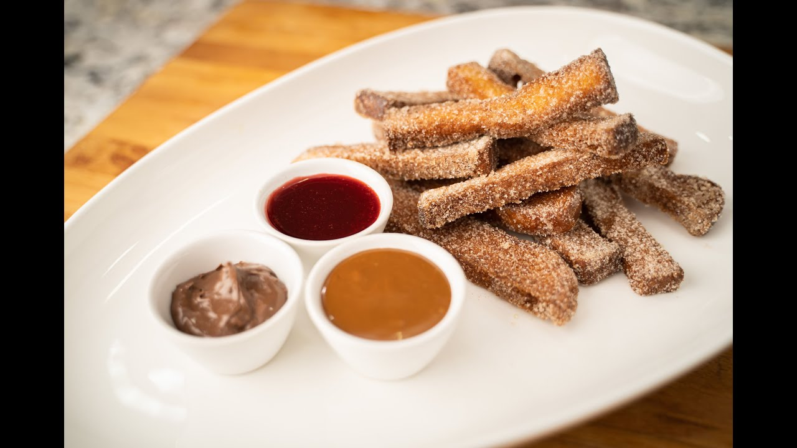

Churro French Toast Sticks

Ingredients
- ½ loaf unsliced bread *sliced bread is ok too*
- 1/2 cup milk
- 2 Whole eggs
- 1 tbsp sugar
- 1 1/2 tsp ground cinnamon
- Pinch of salt
- Unsalted butter for cooking
- Maple Syrup
Cinnamon Pepper Sugar
- 1/2 cup sugar
- 2 tsp ground cinnamon
- 1 tsp finely ground black pepper
Steps
-
Begin by cutting ½ of a loaf of bread into 1 inch batons, by slicing 1
inch thick slices, then cutting into 1 inch thick sticks.
-
In a small mixing bowl, prepare cinnamon pepper sugar by whisking together
sugar, cinnamon, and finely ground black pepper.
-
In a separate small mixing bowl, whisk together 2 eggs, sugar, and
cinnamon until fully combined. Once combined, whisk in milk until
homogenous.
-
Heat a pan over medium high heat. While the pan is heating, melt a pad of
butter in the pan.
-
While heating, begin to soak all sides of your breadsticks in the egg
mixture. Ensuring they are fully coated.
-
Add sticks to the hot pan and cook on all sides for about 1 minute or
until golden brown.
-
Once sticks are cooked, toss in the cinnamon pepper sugar mixture and
serve with a side of maple syrup for dipping.